The suffix names the background the file is for, not the colour
of its ink. logo-* is the full shape and
holds down to 32 px. 24 px is the first size that takes
glyph-*: below 32 the shoulders and the
doorway close up, and the simplified shape stays legible where the full
one turns to mush.
One file, not a logo and a word arranged by CSS. The name is cut to
outlines by logo.js, so the
proportions cannot drift, it needs no webfont, and it scales as a unit.
Same approach as designsystemet.no's own logo.
.dvk-brand with both SVGs inlined and
ds-focus on the link. Tab to it to see the
ring. Toggle the colour scheme - it follows, because an inline SVG can
read currentColor and an
<img> cannot. Narrow the window past
30rem and the name gives way to the tower alone.

Resolved values, read from the generated theme at load.
The page background is always
--ds-color-neutral-background-default,
whatever data-color is active. Every other
*-background-default is the background for a
region painted in that colour — not the page. A dashed outline marks
a swatch whose value is identical to the page background, which in
light mode is most of them, because white is white. In dark mode they part
company: accent resolves to a navy-tinted dark, neutral to a plain one.
border-* swatches are drawn as a thick border
rather than a fill, since that is how you will use them.
Heading 2xl
Heading lg
Heading xs
Paragraph lg. Note the tail on lowercase l: ll11
Paragraph md, the body default.
Paragraph sm, for secondary detail.
cluster-prod-01 10.42.0.0/16 sha256:7f3a9c 4m32s
A link and a neutral link.
Lowercase letters, digits and hyphens.
4 buckets, 1.2 TiB used
Nothing scheduled.
Couldn't reach node-3 - last seen 4 m ago.
Upgrade window opens 02:00 UTC.
| Name | Address | Status |
|---|---|---|
| node-1 | 10.42.0.11 | Ready |
| node-2 | 10.42.0.12 | Draining |
| node-3 | 10.42.0.13 | Unreachable |